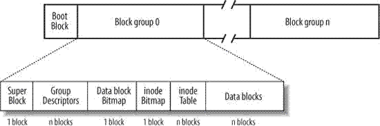

本文基于linux1.2.13内核源码，分析ext2文件系统的实现，主要分析ext2文件系统的挂载、数据块block分配。
导读：
一、ext2 概述
ext2是现在仍在广泛使用的一个文件系统，它对ext和minix进行了扩展和性能上的增强，上一篇文章ext文件系统源码分析中提到，文件系统的的核心就是分配和回收inode以及数据块block的方式。minix使用位图对整个块设备进行inode以及数据块block的分配和回收，ext文件系统使用链表对整个块设备进行inode以及数据块block的分配和回收，而ext2的方式更像是minix的方式1，但是又有较大的改进。
1 ext2将块设备的块分成block_group,每个组内都是按照位图的方式管理inode和数据块block。
2 数据块block的分配采用了预分配的机制。
使用这两个特点使得文件尽可能的分配在相邻的块上，同一个组内，这样可以减少平均寻道时间，提高IO效率。
ext2还有个特点就是在创建文件系统的时候可以根据预期的文件平均大小选择最佳的块大小，避免块的浪费。
二、ext2 映像结构

第一个是启动引导相关的，之后开始进行块的分组，每组的结构都是一样的，每组内开始第一个块是super_block,接下来是group_descriptors，这个结构是长这样的，一个块上面有很多个group_descriptors，总共有多少个是在格式化文件系统的时候由硬盘分区大小决定的。再接下来是数据块block的位图，表示相应块号的数据块是否被占用，每个位代表一个块，按照顺序索引。接下来是inode的位图，再接下来是存放inode的块，同样，它的数量是格式化文件系统的时候确定的。最后是数据块block的地方 ext2_super_block中s_first_data_block就指向这个块号。之后就是下一个块组，值得一提的是，每个块组中super_block和group_descriptor的内容都是一样的，而inode和数据块block的内容是各个块组都不一样的。文件系统在挂载的时候只是用第一个块组中的super_block和group_descriptors，其它的块组中的super_block和group_descriptors在文件系统不一致的时候使用。
可以看出ext2的每个块组的结构与minix文件系统很相似。但ext2的高明之处在于数据块block的分配策略，以及将块非为块组的方式。
三、ext2挂载过程
挂载过程就是读取super_block和块组描述符的过程，这个过程与上一节的ext2映像结构对照起来将很容易理解。
挂载过程还是之前分析minix和ext文件系统一样，只不过现在的具体文件系统实现变成了ext2。
1 首先在vfs中分配super_block的内存结构，调用ext2注册的读取文件系统超级块的函数，也就是ext2_read_super;
2 ext2_read_super读取块设备上的超级块，块组描述符group_descriptors;
3 将super_operation操作指针记录到super_block中;
4 获取根节点.
下面是每一步的详细说明：
1 由sys_mount系统调用开始挂载的整个过程，如果是一根文件系统在系统启动的时候挂载mount_root调用开始，后面的过程都一样。
**sys_mount==>>do_mount==>>read_super**
`read_super`是vfs中的一个分发者，它根据文件系统的名字调用注册到系统中的文件系统的读取超级块的函数，如下是它的组要代码：
//根据要挂载文件系统的名字找到注册到系统中的文件系统类型数据结构
//struct file_system_type *type;注册到系统中的文件系统，每个文件系统都有一个这样的结构
if (!(type = get_fs_type(name))) {
printk("VFS: on device %d/%d: get_fs_type(%s) failed\n",
MAJOR(dev), MINOR(dev), name);
return NULL;
}
s->s_dev = dev;
s->s_flags = flags;
//调用相应文件系统注册时候提供的读取自己的超级快的函数，这里调用的是`ext2_read_super`
if (!type->read_super(s,data, silent)) {
s->s_dev = 0;
return NULL;
}
2 由具体的文件系统将超级块读入文件系统高速缓存区，在读入到内核内存中的super_block结构
//读取超级块，sb_block=1
if (!(bh = bread (dev, sb_block, BLOCK_SIZE))) {
sb->s_dev = 0;
unlock_super (sb);
printk ("EXT2-fs: unable to read superblock\n");
return NULL;
}
下面的这段代码将有用的信息记录到超级块结构中，这些数据有的是直接从块设备的超级块中读出的，有的是经过一定计算后的数据，总之，他们为后面进行inode和block的管理提供方便的信息：
//将文件系统告诉缓存区中的super_block记录到es结构，再将相关系统记录到super_block结构
es = (struct ext2_super_block *) bh->b_data;
sb->u.ext2_sb.s_blocks_per_group = es->s_blocks_per_group;//每个块组中的块数
sb->u.ext2_sb.s_frags_per_group = es->s_frags_per_group;//每个块组中的fragment数，和块数相同，ext2中fragment目前全部和block大小一样
sb->u.ext2_sb.s_inodes_per_group = es->s_inodes_per_group;//每个块组中的inode数
sb->u.ext2_sb.s_inodes_per_block = sb->s_blocksize /
sizeof (struct ext2_inode);//每个block上的inode数
sb->u.ext2_sb.s_itb_per_group = sb->u.ext2_sb.s_inodes_per_group /
sb->u.ext2_sb.s_inodes_per_block;每个块组中inode占用的块数
sb->u.ext2_sb.s_desc_per_block = sb->s_blocksize /
sizeof (struct ext2_group_desc);//每个块上面组描述符数量
计算块组的个数，EXT2_BLOCKS_PER_GROUP(sb)是上面提到的每个块组中的块数，超级块中并没有一个字段记录总共有多少个块组，所以根据总得块数和每个块组中的块数计算有多少个块组。sb->u.ext2_sb.s_groups_count是总共的块组个数，db_count是块组描述符占用的块数，每个块组中都会占用这么多个块。
//总共的块组个数
sb->u.ext2_sb.s_groups_count = (es->s_blocks_count -
es->s_first_data_block +
EXT2_BLOCKS_PER_GROUP(sb) - 1) /
EXT2_BLOCKS_PER_GROUP(sb);
//块组描述符占用的块数
db_count = (sb->u.ext2_sb.s_groups_count + EXT2_DESC_PER_BLOCK(sb) - 1) /
EXT2_DESC_PER_BLOCK(sb)
//分配一段内存，用于存放读取到的group_descriptors
sb->u.ext2_sb.s_group_desc = kmalloc (db_count * sizeof (struct buffer_head *), GFP_KERNEL);
3 这一步虽然简单，但是后续读写inode全部要使用这个函数指针，它具有重要的意义：
sb->s_op = &ext2_sops;//将ext2文件系统的inode读写函数指针记录到`super_block`中
4 调用vfs中的iget获取根inode，iget会根据sb->s_op中的ext2_read_inode再次回到具体的ext2文件系统中来读取根inode
if (!(sb->s_mounted = iget (sb, EXT2_ROOT_INO))) {
sb->s_dev = 0;
for (i = 0; i < db_count; i++)
if (sb->u.ext2_sb.s_group_desc[i])
brelse (sb->u.ext2_sb.s_group_desc[i]);
kfree_s (sb->u.ext2_sb.s_group_desc,
db_count * sizeof (struct buffer_head *));
brelse (bh);
printk ("EXT2-fs: get root inode failed\n");
return NULL;
}
四、ext2 数据块block的分配机制
从上面的读super_block和读inode的ext2_read_inode都看不出ext2文件系统相对于过去的minix或者是ext文件系统有什么高明之处，我认为ext2的设计的重点就是在数据块block的分配时候的算法，它在给一个文件分配数据块block时，采用了预分配的策略，分配某个块的时候，提前把这个块附近的几个块也临时占用了，这样别人不能使用这些块了，当这个文件扩大的时候需要再次分配数据块block，它此时就把刚才预先非配或者说刚才预留的block中分配给这个文件，如果先前没有预分配到连续的块，就从新分配一个块，并将这个新块周围的块预留下来，等待下次再非配给这个文件。这样，这个文件所分配到的block最大化的连续在一起，再次读取文件内容的时候效率就会很高！
涉及到这种block分配的算法的函数主要有fs/ext2/inode.c中的ext2_alloc_block和fs/ext2/balloc.c
//这个函数的总体思想就是判断有没有想要获得的块，goal代表想获得的块号，如果它被预留了，那么直接或者这个块，然后返回，如果goal没有被预留，则调用ext2_new_block从新分配一个inode并预留相关块
static int ext2_alloc_block (struct inode * inode, unsigned long goal)
{
#ifdef EXT2FS_DEBUG
static unsigned long alloc_hits = 0, alloc_attempts = 0;
#endif
unsigned long result;
struct buffer_head * bh;
wait_on_super (inode->i_sb);
#ifdef EXT2_PREALLOCATE
if (inode->u.ext2_i.i_prealloc_count &&
(goal == inode->u.ext2_i.i_prealloc_block ||
goal + 1 == inode->u.ext2_i.i_prealloc_block))
{
result = inode->u.ext2_i.i_prealloc_block++;
inode->u.ext2_i.i_prealloc_count--;
ext2_debug ("preallocation hit (%lu/%lu).\n",
++alloc_hits, ++alloc_attempts);
/* It doesn't matter if we block in getblk() since
we have already atomically allocated the block, and
are only clearing it now. */
if (!(bh = getblk (inode->i_sb->s_dev, result,
inode->i_sb->s_blocksize))) {
ext2_error (inode->i_sb, "ext2_alloc_block",
"cannot get block %lu", result);
return 0;
}
memset(bh->b_data, 0, inode->i_sb->s_blocksize);
bh->b_uptodate = 1;
mark_buffer_dirty(bh, 1);
brelse (bh);
} else {
ext2_discard_prealloc (inode);
ext2_debug ("preallocation miss (%lu/%lu).\n",
alloc_hits, ++alloc_attempts);
//如果goal没有被预留，则调用ext2_new_block从新分配一个inode并预留相关块
if (S_ISREG(inode->i_mode))
result = ext2_new_block
(inode->i_sb, goal,
&inode->u.ext2_i.i_prealloc_count,
&inode->u.ext2_i.i_prealloc_block);
else
result = ext2_new_block (inode->i_sb, goal, 0, 0);
}
#else
result = ext2_new_block (inode->i_sb, goal, 0, 0);
#endif
return result;
}
ext2_new_block的过程引用源码中的注释很清晰：
/ * ext2_new_block uses a goal block to assist allocation. If the goal is * free, or there is a free block within 32 blocks of the goal, that block * is allocated. Otherwise a forward search is made for a free block; within * each block group the search first looks for an entire free byte in the block * bitmap, and then for any free bit if that fails. /